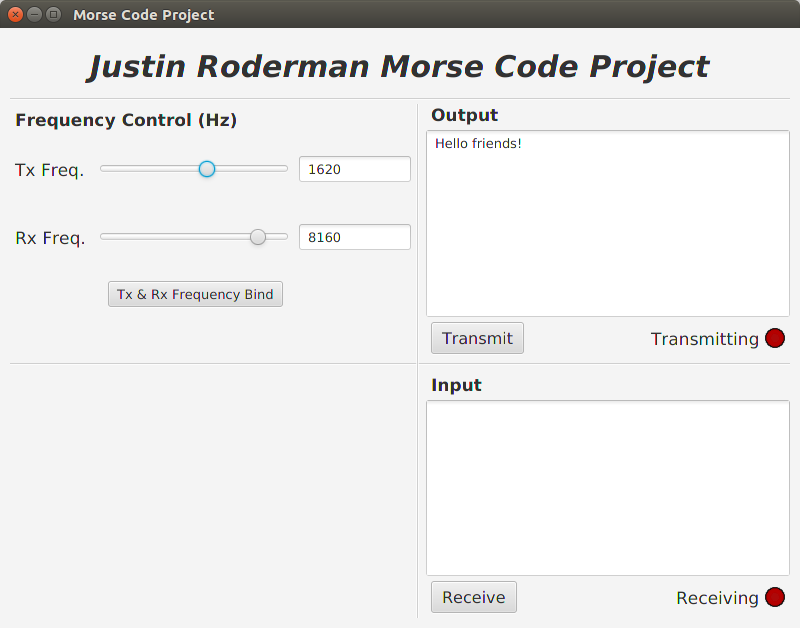

Back

Mood for a Melody
It’s a pretty good crowd, for a Saturday. At least it will be, so you better prepare.
That is the tagline for this interactive text-focused story game, based around Billy Joel’s fantastic
song Piano Man. You play as Bill, the nightly piano entertainer at the Zanzibar. The gameplay,
which is similar in style to games like Subsurface Circular and the interrogations of
LA Noire, sees you communicating with the disillusioned patrons at the bar, trying to work through
their problems in order to find the spark, a memory that they need to hear that night. The game is
built in C# using the Unity game engine, and the UI and dialog system is all built from scratch.
The story is developed in Twine and then exported to Unity using a Twine integration I developed. The
game is currently in development, and we hope to publish a playable demo on itch.io soon.
Languages / Frameworks
- C#
- Unity
- Twine
Skills Learned / Improved
- UI Design
- Twine Integration
- Working with Writers
Other Notes
- Sole Programmer
- Team Project
- Made for Fun
Back


Voyage of the Infinity
Inspired by the Infocom classics I played as a kid like Zork and Planetfall,
Voyage of the Infinity is an unfinished text adventure game that can be played in the browser.
Built on the Phaser game engine, a massive goal of the project was to make the codebase as
extensible as possible. All code specific to the game is stored in JSON files, so that the
code could easily be used to build other text adventure games in the future. The engine code
is written in TypeScript, along with some fragment shaders written in GLSL for extra flair.
The game was developed in conjunction with my friend Sean, who focused on the story and the
puzzles.
Will I come back to this project later and finish it? Most likely yes. It was a lot of
fun to design and create, plus we already have two-thirds of the game planned out! The reason
I stopped was due to burn out. Soon, however, The Infinity shall voyage again.
There is unfortunately no tutorial yet, but if you type "help", you will be given all the
necessary commands. Note that the game is unfinished, and the content ends roughly when
you reach the bio lab.
WARNING: the game is really loud, so turn down your speakers (I need to fix that).
Languages / Frameworks
- TypeScript
- Phaser
- GLSL
- Webpack
- Heroku Web Hosting
Skills Learned / Improved
- Browser App Development
- Browser Build Systems
- Game Engine Design
- OpenGL Shaders
Other Notes
- Sole Programmer
- Team Project
- Made for Fun
Back


Cannoneer
Cannoneer is a 2D arcade shooter built on the Unity engine. This project gave me extensive practice with the C# language, as well as the Unity Game Engine. This project gave me a chance to flex my game design skills, as well as provided me with fun challenges associated with working as the only software developer on a team. The game won the Best New Media Award at the KU Film & Media Studies Tensies Awards. Although it has been delayed, a mobile version is in the works which is giving me experience in mobile development and in crafting an intuitive mobile UI.
Languages / Frameworks
- C#
- Unity
Skills Learned / Improved
- Game Design
- Balancing Mechanics
- Game Feel
- Mobile UI Design
- Mobile Controller Design
Other Notes
- Sole Programmer
- Team Lead
- Won an Award!
- Offical Release was Presented in a Home-Built Arcade Cabinet
- Developed for a Game Design Class
Back

Lost and Raturn
When we heard that the theme for the 2021 Global Game Jam was “Lost and Found”, a couple of ideas were
thrown around. Our favorite was one that Sean had scribbled on a napkin while Varun and I were discussing
mechanic ideas. The idea was for a good-natured rat who returns the items that the population of the
city has dropped. This developed into Lost and Raturn, an arcade game built in C# with Unity engine.
In it, you play as Marshall, a rat who must grab items that are dropped by different types of city folk
and climb up their legs to return the right items to the right people. But look out! City dwellers are
dangerous, and if you get stepped on, you’ll lose a life!
In all honesty, this might be the game I am most happy with in all of my portfolio. It was a ton of fun
to work on, I got to become closer with my friends and the game development community at my jam site
(all of the voices in the game were from various other jammers who responded to our call for “yelps
and shrieks”), and I just think that the game is a lot of fun to play. I hope you enjoy it!
Note: the online leaderboard does not work in the online version, but if you download the game it
should be connected.
Languages / Frameworks
- C#
- Unity
Skills Learned / Improved
- Game Deployment
- Unity Animations
- Unity Particle System
- Online Leaderboards
- Working with Other Developers
- Working under Tight Deadlines
Other Notes
- Team Project
- Made for the 2021 Global Game Jam
- Got the Most Likes out of all the Games in our Jam Site
Back

RFID Pong
When you hear the word RFID, you probably think of credit cards, door locks, and those people
injecting microchips into their
skin. But would you think… controller for classic Atari games?
Well don’t worry, we did.
RFID Pong is exactly what it sounds like: Pong, but controlled with RFID cards. The game is written
in Python and built using the pygame library, along with an arduino running 2 RFID scanners on a
breadboard. It works by the 2 players both having 2 RFID cards, 1 programmed to be down and 1
programmed to be up. When a player wants to move their paddle in a direction, they scan the card
associated with the desired direction, and the paddle will move as long as the card is on the scanner.
It was built in 8 hours during the
2020 KU hackathon,
but was disqualified from being entered because I contributed in organizing the event that year (see HackKU
RFID in the Hardware section). It was a big hit, and other participants would come over to play the game and compete!
Languages / Frameworks
- Python
- Pygame
- Arduino
- MFRC522 RFID
Skills Learned / Improved
- Basic Circuitry
- Pygame Development
- Interfacing with Arduino
- Using Arduino as a Controller
- Limitations of RFID
Other Notes
- Team Project
- Made during the 2020 HackKU hackathon
- Led to a Large Tournament Being Held the Night before Judging
1
2
3
Back

Terminal
Terminal is an asychronous, cooperative, puzzle, couch-multiplayer game with some unique mechanics.
Player One is in charge of the top two-thirds of the screen, and for them the game is a platformer.
They use a controller and are able to jump around the environment, utilizing special abilities like
wall jumps and a high jump. Player Two is in charge of the lower third of the screen, and for them
the game is a combination of a typing and puzzle game. Player Two uses the keyboard, and takes on
the role of a hacker, typing in commands to a terminal. The "hacker" (Player Two) is able to manipulate
the "spy's" (Player One's) environment. The two players must work together in order to complete
levels by using a combination of skillful platforming, clever puzzle solving, and fast typing skills.
The game was created in Lua using the LÖVE 2D framework, and was actually my first ever video
game that was played by other people, so this game holds a special place in my heart. It was created
for the 2017 Jayhacks hackathon, and won 2nd place!
Languages / Frameworks
- Lua
- LÖVE 2D
Skills Learned / Improved
- Asynchronous Game Design
- Working with Other Developers
- Working under Tight Deadlines
Other Notes
- Team Project
- Made for the 2017 JayHacks Hackathon
- Won 2nd Place!
Back


EECSurvival and the DFQE
EECSurvival is a 2D bullet-hell shooter that is implemented using our homebuilt engine, The DFQE. DFQE was developed in Java using the Lightweight Java Game Library, which communicates directly with OpenGL. The project was built using an Agile Development Cycle, where we created design documents and hosted Scrum mettings. We also heavily tested the engine and game using a testing suite we created.
Languages / Frameworks
- Java
- LWJGL
- OpenGL
Skills Learned / Improved
- Working on a Full Dev Team
- Working under Tight Deadlines
Other Notes
- Team Lead
- Team Project
- Made for our Software Engineering Class
- Got a 100% on the Assignment!
Back


Minesweeper
Most everyone knows Minesweeper, the classic puzzle game in which you try to clear a minefield using numeric hints as fast as you can. This project is simply a reproduction of the game written in Java using the JavaFX framework that was put together in one afternoon. The stretch goal for this project is to design a mechanic that removes game overs that are out of the player's control.
Languages / Frameworks
- Java
- JavaFX
Skills Learned / Improved
- Speed Coding
- Recreating Old Games
- Balancing Existing Games
Other Notes
- Built in Less than 4 Hours
Back


PoserRank
PoserRank is a social media platform that relies on an abstract concept of "posery" (an umbrella term for acts of stupidity). The project was primarily developed in Python using the Flask framework, but also contained uses of SQLite for database communication. The user interface was generated using HTML and CSS. The project has been discontinued due to lack of enthusiasm, but significant work has been done on the backend and frontend.
Skills Learned / Improved
- Website Design
- Frontend Programming
- Backend Programming
- Databases
Other Notes
- Frontend Lead
- Team Project
- Made for Fun
Back


Hot Rod DB
Hot Rod Gif Database is a webpage containing a variety of .gif images taken from the movie Hot Rod. The website was built using HTML and CSS, with a fair amount of Javascript sprinkled in for making aspects of the UI functional. The project presented a lot of obstacles due to the amount of data being shown at one time. The project is used by many of my friends on a somewhat regular basis.
Languages / Frameworks
- HTML
- CSS
- Javascript
Skills Learned / Improved
- Website Design
- Website Performance
- Organizing Data
- Search Algorithms
Other Notes
- Made for a Friend's Birthday
Back

Doodle Clone
Doodle Clone is a web-based scheduling service, much like the popular Doodle application it is named after (I know the name is unoriginal, I did not pick it). The project is written mostly in Javascript, and uses HTML and CSS for the user interface. The project was developed on a team on which I was lead. The project is significant because our team inherited the project, and was then tasked to implement more features.
Languages / Frameworks
- HTML
- CSS
- Javascript
Skills Learned / Improved
- Working on a Legacy Codebase
- Extending an Existing Project
- Leading a Team
Other Notes
- Inherited the Codebase from Another Team
- Team Lead
- Team Project
- Made for our Software Engineering Class
Back
KU-dle
KU-dle is a scheduling program, similar to the popular Doodle service. The app was created using the Java language and the JavaFX framework. The app gave me experience with working on a deadline, as well as practice crafting a simple and intuitive user interface. I was team lead for this project, and that title made me responsible for delegating tasks and making sure everything was running smoothly.
Languages / Frameworks
- Java
- JavaFX
Skills Learned / Improved
- Designing an Interface
- Leading a Team
- Creating a Calendar
Other Notes
- Team Lead
- Team Project
- Made for our Software Engineering Class
- Got a 100% on the Assignment!
Back
Morse Code Project
The Morse Code Project is a fun application that allows computers to communicate through the use of morse code projected through speakers at superaudible levels. The project, written in Java, has a user interface that is implemented using the JavaFX framework. It utilizes high-level Digital Signal Processing libraries to parse audio data into patterns, and those patterns into text. The project is unfinished, but will be completed one day!
Languages / Frameworks
- Java
- JavaFX
Skills Learned / Improved
- Digital Signal Processing
- User Interface Design
- Morse Code
Other Notes
- Made for Fun
